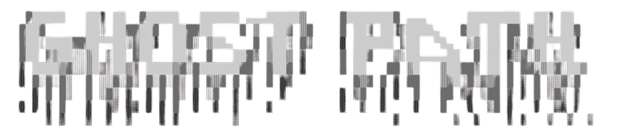

Traditional URL discovery tools are single-purpose scripts with no logging, no extensibility and no structured output. GhostPath was built to address all three failures — a reconnaissance framework, not a one-liner wrapper.
Every module is independently importable, centrally logged and outputs consistent structured data. It runs standalone or as the intelligence engine behind the ReconX web platform.

👻 GhostPath Recon Shell | Developed by @atharvbyadav Type 'help' for options ghostpath> timetrail --target tesla.com --source wayback [TimeTrail] Querying Wayback Machine... [+] 4,231 unique historical URLs discovered [TimeTrail] Results saved to: tesla.com.txt ghostpath> certtrack --target tesla.com [+] api.tesla.com [+] staging.tesla.com [+] fleet.tesla.com ⚠ 3 noisy entries filtered ghostpath> pathprobe --target https://tesla.com --threads 20 [+] https://tesla.com/admin (200 OK) [→] https://tesla.com/api (301 Redirect) [×] https://tesla.com/.env (403 Forbidden) [PathProbe] 847 paths attempted · 3 found ghostpath> █
One engine.
extension.
arg_parser() never has
logic. run() never parses
strings.
shared/. Zero duplication
across modules.
stderr. Stdout stays
pipeable.
30 seconds.
Install via PyPI
Recommended$ pip install GhostPath
# Isolated global install (preferred)
$ pipx install GhostPath
# Verify
$ ghostpath --version
# Launch shell
$ ghostpath
ghostpath update — runs
pipx reinstall GhostPath
automatically.
Install from Source
Development$ cd GhostPath
# Virtual environment
$ python3 -m venv .venv
$ source .venv/bin/activate
$ pip install -r requirements.txt
$ python main_cli.py
requests. Zero heavy
framework dependencies.
Requirements
Environment| Requirement | Version | Notes |
|---|---|---|
| Python | ≥ 3.7 | 3.10+ recommended for best readline support |
| pip / pipx | latest |
pipx gives a
cleaner isolated global
install
|
| requests | ≥ 2.28 | Only runtime dependency — auto-installed via pip |
| readline | stdlib |
Built-in on Linux/macOS.
Windows may need
pyreadline3
|
| Network | — | Outbound HTTPS to Wayback, URLScan, crt.sh, Common Crawl |
full control.
by design.
--debug.
--debug.
[DEBUG] Wayback API URL: https://web.archive.org/cdx/search/cdx
[DEBUG] Params: {'url': '*.tesla.com/*', 'output': 'text', 'fl': 'original', 'limit': 5000}
[DEBUG] Attempt 1 — Sending request...
[DEBUG] HTTP 200 Response from Wayback
[DEBUG] Retrieved 4,231 unique URLs from Wayback.
[DEBUG] Total unique URLs fetched: 4231
[TimeTrail] Results saved to: tesla.com.txt
stderr. This keeps
stdout clean for actual
results — pipe
ghostpath timetrail ... >
urls.txt
without log noise corrupting the output
file.
--debug 2>audit.log
captures every API call, retry decision
and parse result — full reproducible
audit trail for writeups.
is going.
testing only.
Using GhostPath against targets without authorization may violate the Computer Fraud and Abuse Act (CFAA), GDPR and equivalent laws in your jurisdiction.
You are solely responsible for ensuring your usage complies with all applicable laws and your organization's policies.
The author (@atharvbyadav) does not condone or accept any responsibility for unauthorized or malicious use of this software.